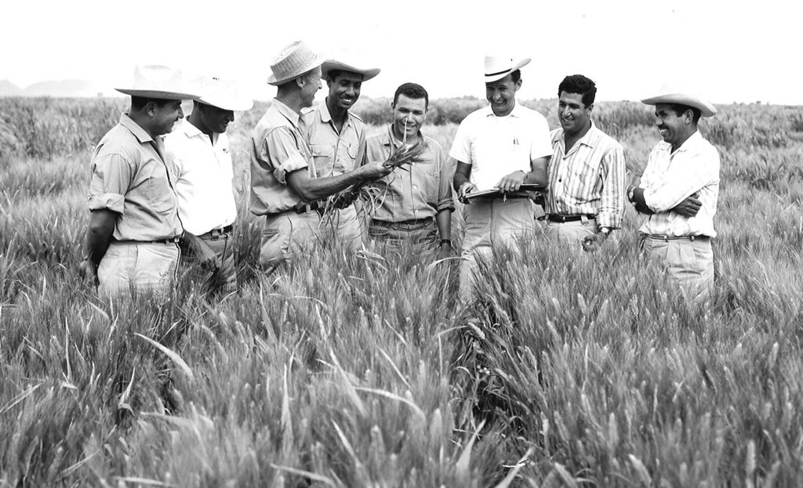

Dr. Norman Borlang
The man who saved a billion lives

Dr. Norman Borlang, third from the left, trains biologists in Mexico
on how to increase wheat yields - part of his life-long war on hunger.
Here's a time line of Dr. Borlang's life:
- 1914 - Born in Cresco, lowa
- 1933 - Leaves his family
- 1935 - Has to stop school and save up more money. Works in the civilian conervation corps.
- 1941 - Receives a Ph.D in Genetics.